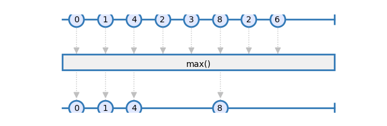
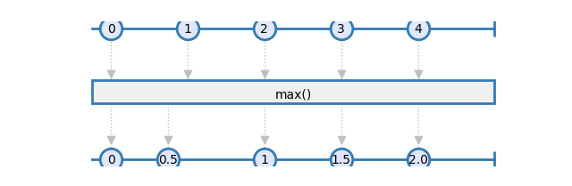
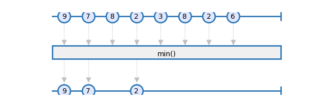

Math
- rxsci.math.max(key_mapper=<function <lambda>>, reduce=False)
Returns the maximum value emitted in the source observable.
The source can be an Observable or a MuxObservable.

- Parameters:
key_mapper – [Optional] a function called on each item before computing the max.
reduce – [Optional] Emit an item for each source item when reduce is False, otherwise emits a single item on completion.
- Returns:
An observable emitting the max of source items.
- rxsci.math.mean(key_mapper=<function <lambda>>, reduce=False)
Averages the items emitted in the source observable
The source can be an Observable or a MuxObservable.

- Parameters:
key_mapper – [Optional] a function called on each item before computing the average.
reduce – [Optional] Emit an item for each source item when reduce is False, otherwise emits a single item on completion.
- Returns:
An observable emitting items whose value is the sum of source items.
- rxsci.math.min(key_mapper=<function <lambda>>, reduce=False)
Returns the minimum value emitted in the source observable.
The source can be an Observable or a MuxObservable.

- Parameters:
key_mapper – [Optional] a function called on each item before computing the min.
reduce – [Optional] Emit an item for each source item when reduce is False, otherwise emits a single item on completion.
- Returns:
An observable emitting the min of source items.
- rxsci.math.stddev(key_mapper=<function <lambda>>, reduce=False)
Computes the standard deviation.
This is an approximation of the real standard deviation. See rxsci.math.variance for more information.
Use this operator instead of rxsci.formal.stddev when there are more than 1000 items in the source observable.
The source can be an Observable or a MuxObservable.
- Parameters:
key_mapper – [Optional] a function called on each item before computing the variance.
reduce – [Optional] Emit an item for each source item when reduce is False, otherwise emits a single item on completion.
- Returns:
An observable emitting the variance of the source items. If the number of items emitted in the source observable is less than 2, and reduce is set, then emits None on completion.
- rxsci.math.sum(key_mapper=<function <lambda>>, reduce=False)
Sums the items emitted in the source observable
The source can be an Observable or a MuxObservable.
- Parameters:
key_mapper – [Optional] a function called on each item before computing the sum.
reduce – [Optional] Emit an item for each source item when reduce is False, otherwise emits a single item on completion.
- Returns:
An observable emitting items whose value is the sum of source items.
- rxsci.math.variance(key_mapper=<function <lambda>>, reduce=False)
Computes the variance of the items emitted in the source observable.
This is an approximation of the real variance. The implementation is based on the following article: standard_deviation
Use this operator instead of exact_variance when there are more than 1000 items in the distribution.
The source can be an Observable or a MuxObservable.
- Parameters:
key_mapper – [Optional] a function called on each item before computing the variance.
reduce – [Optional] Emit an item for each source item when reduce is False, otherwise emits a single item on completion.
- Returns:
An observable emitting the variance of the source items.
Distributed
This module contains distributed implementations of the math algorithms. They are useful when distributing computations on several nodes, and reducing then after.
- rxsci.math.dist.describe(quantiles=[0.25, 0.5, 0.75])
Computes statistical metrics of the distribution.
For each Distogram ditribution received on the source observable, computes the following metrics:
min
max
mean
standard deviation
The quantiles provided as argument
The source can be an Observable or a MuxObservable.
- Parameters:
quantiles – [Optional] A list of quantiles to compute.
- Returns:
An observable emitting the minimum value of each source items.
- rxsci.math.dist.histogram(bin_count=100)
Returns the histogram of the distribution.
The histogram in in the form of a list of tuples, where each tuple is in the form (bin value, element count).
This operator does not emit items until enough items have been received.
The source can be an Observable or a MuxObservable.
- Parameters:
bin_count – [Optional] Number of bins to use in the histogram.
- Returns:
An observable emitting the histogram of each source items.
- rxsci.math.dist.max()
Returns the maximum value of the distribution.
The source can be an Observable or a MuxObservable.
- Returns:
An observable emitting the maximum value of each source items.
- rxsci.math.dist.mean()
Returns the average value of the distribution.
The source can be an Observable or a MuxObservable.
- Returns:
An observable emitting the mean value of each source items.
- rxsci.math.dist.merge()
Merges distogram distributions.
The source observable must contain items that are a collection of Distogram object. These are typically the result of a zip operation.
The source can be an Observable or a MuxObservable.
- Returns:
An Observable of Distogram objects.
- rxsci.math.dist.min()
Returns the minimum value of the distribution.
The source can be an Observable or a MuxObservable.
- Returns:
An observable emitting the minimum value of each source items.
- rxsci.math.dist.quantile(value)
Returns a quantile value of the distribution.
The source can be an Observable or a MuxObservable.
- Parameters:
value – The quantile value to compute, between 0 and 1.
- Returns:
An observable emitting the quantile value of each source items.
- rxsci.math.dist.stddev()
Returns the standard deviation of the distribution.
The source can be an Observable or a MuxObservable.
- Returns:
An observable emitting the standard deviation of each source items.
- rxsci.math.dist.update(bin_count=100, weighted_diff=False, reduce=False)
Updates the distribution by adding source items to it
The source can be an Observable or a MuxObservable.
- Parameters:
bin_count – [Optional] number of bins to use.
weighted_diff – [Optional] Applies log weight to bin computation. This may be needed if the distribution contains outliers.
reduce – [Optional] Emit an item for each source item when reduce is False, otherwise emits a single item on completion.
- Returns:
An Observable of Distrogram objects.
- rxsci.math.dist.variance()
Returns the variance value of the distribution.
The source can be an Observable or a MuxObservable.
- Returns:
An observable emitting the variance of each source items.
Formal
This module contains the exact - formal - implementation of the estimation algorithms present in the rxsci.math module. Use them with caution because their precision usually come with either a significant impact on performances, either with usage restrictions.
- rxsci.math.formal.stddev(key_mapper=<function <lambda>>, reduce=False)
Computes standard deviation
The implementation is based on the formal definition of the standard deviation. This implies that all items are cached in memory to do the computation. Use the rxsci.math.stddev operator to compute standard deviation on a large observable.
The source can be an Observable or a MuxObservable.
- Parameters:
key_mapper – [Optional] a function called on each item before computing the standard deviation.
reduce – [Optional] Emit an item for each source item when reduce is False, otherwise emits a single item on completion.
- Returns:
An observable emitting standard deviation of source items.
- rxsci.math.formal.variance(key_mapper=<function <lambda>>, reduce=False)
Computes the variance of the items emitted in the source observable.
The implementation is based on the formal definition of the variance. This implies that all items are cached in memory to do the computation. Use the rxsci.math.variance operator to compute varianc on a large observable.
The source can be an Observable or a MuxObservable.
- Parameters:
key_mapper – [Optional] a function called on each item before computing the variance.
reduce – [Optional] Emit an item for each source item when reduce is False, otherwise emits a single item on completion.
- Returns:
An observable emitting variance of source items.